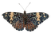

新闻流页面
多源情报筛选、排序与关键词搜索
条目详情、来源追溯与重要性标注
信息入口 → 探查 → 安全 → 批量爬取 → 收集分发 → 统计发现 → 技术底座
多源情报筛选、排序与关键词搜索
条目详情、来源追溯与重要性标注
智能探查与技术探查统一入口
待审核方式、方式库与运行限制管理
趋势工作台、故事线与趋势轮播
趋势设置与分发（管理密码解锁）
Token 用量与每日消息量看板
查询 / 探查任务明细（管理密码解锁）
IMAP 连接管理 · Header 规则匹配 · 源发现入库
仓库发现与估量 · Issue / Discussion 水位
增量抓取 · 事件流 · 手动停止与定时调度
邮件源库 · GitHub 仓库库 · Token 监测
爬取方式 / 邮件源 / 仓库：待审核 → 已启用
修复版本重新送审，绝不自动发布
Docker + gVisor（runsc）临时容器执行
不静默回退普通 Docker，全局容量上限
Manifest 路径、入口、校验和、允许域名
Connector 不接触数据库与后端密钥
JWT 认证与管理密码解锁
页面级权限与接口输入约束
方式库 Connector 沙箱批量执行
手动一键批量 · 单方式 自动晨间定时 · 巡检补跑
IMAP 增量收取 · Header 规则匹配
手动手动运行收取 自动定时调度收取
Issue / Discussion · 评论水位
手动手动触发同步 自动定时调度同步
normalize → relevance-filter → dedup → enrich
来源关联 · 幂等入库
解释卡 · Embedding 向量 · 候选聚类
故事线与身份模板生成
统一 Item 情报库，网页新闻可检索、可追溯
标签实体、重要性、时间边界与来源关联
重建邮件与 GitHub 真实讨论关系
回复拓扑、候选分组与证据消息关联
趋势卡片与故事线轮播
候选聚类结果与趋势解释
模板预览、即时发送
趋势分发、预定发送与巡检补发
总 / 输入 / 输出 Token 与模型调用次数
查询消耗 · 探查消耗分项统计
每次探查 / 每次查询 / 单条均 Token
时间段趋势（柱状 / 面积切换）
按入库日期分桶统计
高 / 中 / 低重要性堆叠分布
查询任务明细 · 探查任务明细
24h / 7d / 30d / 自定义 + 定时 / 手动
内部 LLM 网关 · 探查 Agent + 确定性 Pipeline
组件化 SPA · 服务端状态缓存 · 图表可视化
REST API · ORM 与迁移 · 定时任务调度

httpx IMIMAP持久化 · 沙箱运行 · 多协议采集